第03讲 数轴
第03讲 数轴

课程标准 | 学习目标 |
①理解数轴的定义 ②会画数轴，并在数轴表示数 | 1．理解数轴的概念，并能正确画出数轴,，在数轴上表示数； 2．通过数轴与有理数是相互对应的，初步培养学生数学结合思想； |

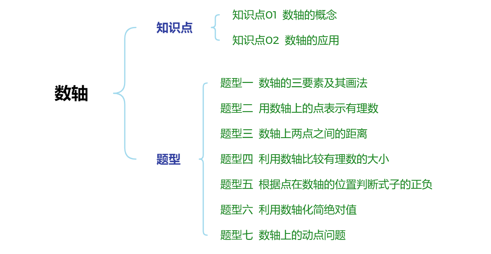

知识点01 数轴的概念
1.概念：规定了原点、正方向、单位长度的直线叫做数轴.
三要素：原点、正方向、单位长度
2.对应关系：数轴上的点和有理数是一一对应的.
【即学即练1】
1．（23-24七年级上·内蒙古巴彦淖尔·阶段练习）下列所示数轴正确的是（ ）
A． B．
C． D．
知识点02 数轴的应用
1.应用 ：（1）比较大小：在数轴上，右边的数总比左边的数大 .
（2）求两点之间的距离：两点在原点的同侧作减法，在原点的两侧作加法.
【即学即练1】
1．（23-24七年级上·浙江台州·期末）如图的数轴上，每小格的宽度相等．

(1)填空：数轴上点 表示的数是______，点
表示的数是______，点 表示的数是______．
表示的数是______．
(2)点 表示的数是
表示的数是 ，点
，点 表示的数是
表示的数是 ，请在数轴上分别画出点和点的位置．
，请在数轴上分别画出点和点的位置．
(3)将 四个点所表示的数按从大到小的顺序排列，用“
四个点所表示的数按从大到小的顺序排列，用“ ”连接．
”连接．

题型一 数轴的三要素及其画法
【典例1】（24-25七年级上·全国·假期作业）下列图形中是数轴的是（ ）
A． B．
C． D．
D．
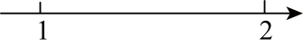
【变式1】（23-24七年级上·广西来宾·期中）下列选项中，数轴表示正确的是（ ）
A．
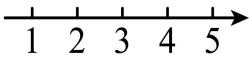
B．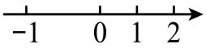
C．
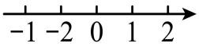
D．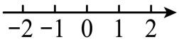
【变式2】（23-24七年级上·广西百色·期末）下列数轴正确的是（ ）
A． B．
B．
C．
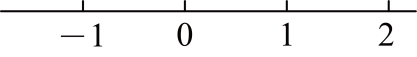
D．【变式3】（23-24七年级上·湖南长沙·期中）下列数轴表示正确的是（ ）
A． B．
C． D．
题型二 用数轴上的点表示有理数
【典例2】（23-24七年级上·山西太原·阶段练习）已知一组数： ，
， ，
， ，
， ，
， ．
．
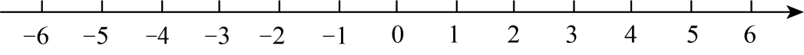
(1)把这些数在下面的数轴上表示出来：
(2)请将这些数按从小到大的顺序排列（用“ ”连接）．
”连接）．
【变式1】（23-24七年级上·北京通州·期末）把下列各数： ，
， ，0，
，0，
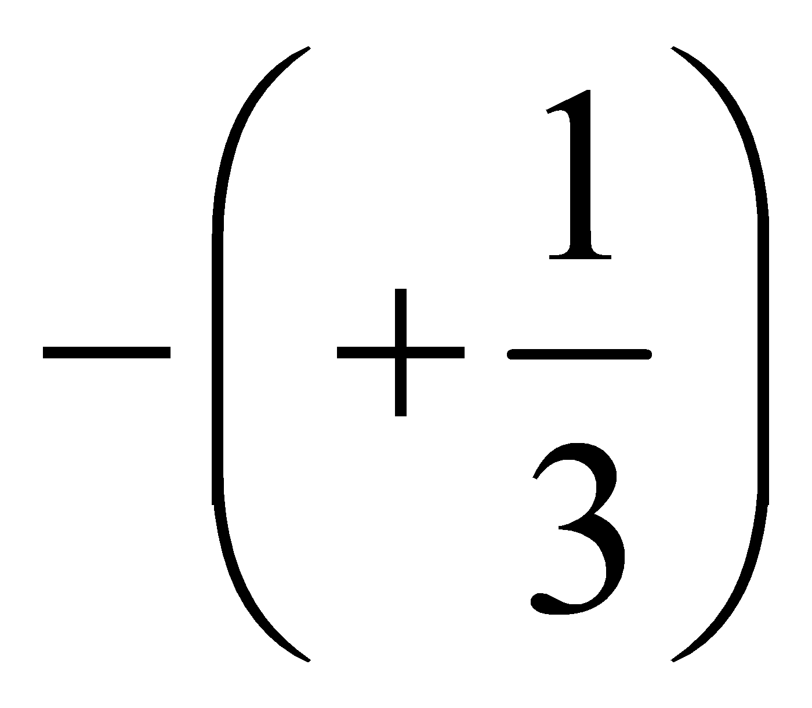
， ，在数轴上表示出来，并用“＜”把它们连接起来．
，在数轴上表示出来，并用“＜”把它们连接起来．
【变式2】（23-24七年级上·江苏南通·阶段练习）把下列各数： ，，，
，，， ，
， ．
．
(1)分别在数轴上表示出来，并把它们用“”连接起来．

(2)将上述的有理数填入图中对应的圈内．
【变式3】（23-24七年级上·海南海口·期中）把下列各数： ，
， ，0，，1.5，
，0，，1.5， ．
．
(1)分别在数轴上表示出来：
(2)将上述的有理数填入图中相应的圈内．

题型三 数轴上两点之间的距离
【典例3】 （23-24七年级上·广东佛山·期末）点A、B在数轴上对应的数分别为和5，则线段 的长度为 ．
的长度为 ．
【变式1】（2024·江苏徐州·二模）如图，数轴上A、B两点之间的距离为 ．

【变式2】（23-24七年级上·重庆沙坪坝·期中）如图，在数轴上点A表示的数是 ，点B表示的数是5，点P在数轴上，若
，点B表示的数是5，点P在数轴上，若 ，则点P表示的数是 ．
，则点P表示的数是 ．
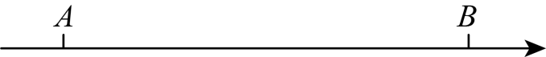
【变式3】（22-23七年级上·湖南衡阳·期末）已知数轴上两点A和B，点A表示数是1，点B与A相距3个单位长度，则点B表示的数是 ．
【变式4】（22-23七年级上·江西宜春·期中）在数轴上有P，M，N三点，点P在点M左侧，M，N两点所表示的数分别是1， ，点P到与点M，N其中一点距离等于点P到另一点距离的2倍，则满足条件的点P所表示的数是 ．
，点P到与点M，N其中一点距离等于点P到另一点距离的2倍，则满足条件的点P所表示的数是 ．
题型四 利用数轴比较有理数的大小
【典例4】（23-24七年级上·江苏盐城·期末）如图，比较大小：a  ．（填“＞”“＜”“＝”）
．（填“＞”“＜”“＝”）
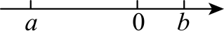
【变式1】（23-24七年级上·山东青岛·期末） 两数在数轴上的位置如图所示，则
两数在数轴上的位置如图所示，则
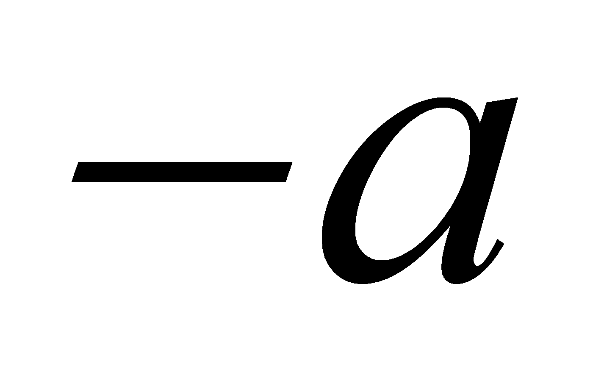
（用“ ”“
”“ ”“
”“ ”填空）．
”填空）．
【变式2】（23-24七年级上·湖南衡阳·期末）如图，数轴上的两个点A、B所表示的数分别为a、b，比较大小：  ．（用“>”“<”或“=”号连接）
．（用“>”“<”或“=”号连接）

【变式3】（23-24七年级上·福建泉州·期末）有理数a，b，c在数轴上的位置如图所示，则
 （填“”“”或“”）．
（填“”“”或“”）．

题型五 根据点在数轴的位置判断式子的正负
【典例5】 （2024·江苏徐州·二模）实数a、b在数轴上的位置如图所示，则下列结论正确的是（ ）
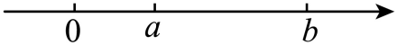
A． B．
B．
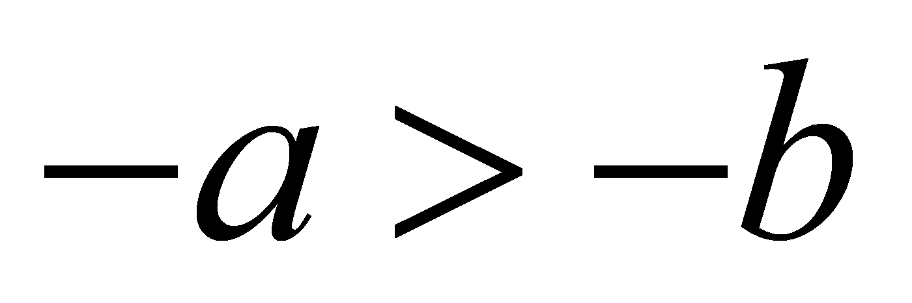
C． D．
D．
【变式1】（23-24六年级下·黑龙江绥化·阶段练习）已知a、b、c三个数的位置如图所示，则下列结论不正确的是（ ）

A． B．
B． C．
C． D．
D．
【变式2】（2023·陕西渭南·一模）实数 ，
， 在数轴上的位置如图所示，则
在数轴上的位置如图所示，则
 (填“
(填“ ”，“”或“
”，“”或“ ”)
”)
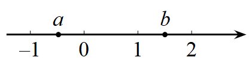
【变式3】（23-24七年级上·重庆九龙坡·阶段练习）有理数a、b、c在数轴上的位置如图：
(1)先把“ ”表示在数轴上，再用“>”或“<”填空．
”表示在数轴上，再用“>”或“<”填空．
 ___________0，
___________0， ___________0，
___________0， ___________0．
___________0．
(2)用“<”将a、b、c、、 、
、 连接起来：___________．
连接起来：___________．
题型六 利用数轴化简绝对值
【典例6】 （23-24六年级下·黑龙江绥化·期中）有理数 在数轴上的位置如图所示，化简
在数轴上的位置如图所示，化简
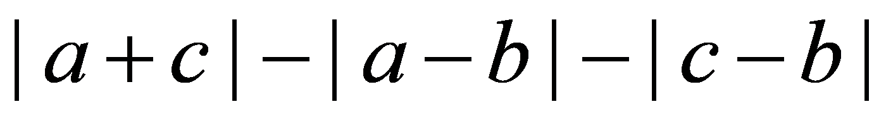
．
【变式1】（22-23七年级上·云南保山·期中）有理数在数轴上的位置如图所示，
化简：
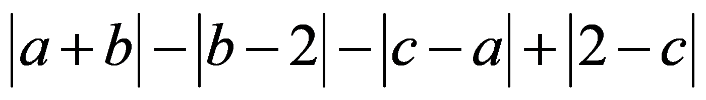
．【变式2】（23-24七年级上·贵州毕节·阶段练习）已知有理数a，b，c在数轴上对应点的位置如图所示：

(1) 1，b 2， ______________2（填“”或“”）
______________2（填“”或“”）
(2)化简： ．
．
【变式3】（23-24六年级下·北京海淀·期中）有理数a，b，c在数轴上的位置如图所示．
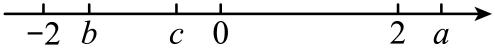
(1)用“＞”“＜”或“＝”填空：
 ______0，
______0， ______0，
______0， ______0．
______0．
(2)化简： ．
．
题型七 数轴上的动点问题
【典例7】 （23-24七年级上·山西临汾·阶段练习）阅读与思考
如图，一个点从数轴上的原点开始，先向右移动3个单位长度，再向左移动5个单位长度，可以看出，终点表示的数是 ．参照图中所给的信息，完成填空：
．参照图中所给的信息，完成填空：
已知A，B都是数轴上的点．
(1)若点A表示数．将点A向右移动5个单位长度至点
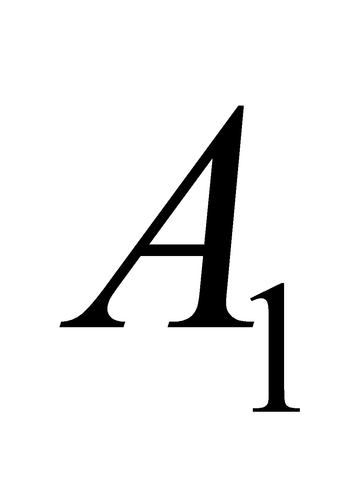
．则点表示的数是________；(2)若点A表示数2，将点A先向左移动7个单位长度，再向右移动 个单位长度至点
个单位长度至点 ，则点表示的数是________；
，则点表示的数是________；
(3)若将点B先向左移动3个单位长度，再向右移动6个单位长度，终点表示的数恰好是0，则点B所表示的数是________．
【变式1】（22-23七年级上·河南郑州·阶段练习）如图，已知点 ，
， ，在数轴上表示的数分别是，，
，在数轴上表示的数分别是，， ，回答下列问题：
，回答下列问题：

(1)将点向右移动 个单位长度，此时点表示的数是多少；
个单位长度，此时点表示的数是多少；
(2)将点向左移动个单位长度，此时点表示的数是多少；
(3)移动，，三个点中的任意两个，能使三个点表示的数相等吗，你有几种移动方法，请写出来．
【变式2】（23-24七年级上·贵州毕节·阶段练习）如图，一个点从数轴上的原点开始，先向左移动 到达点，再向右移动
到达点，再向右移动 到达点，然后再向右移动
到达点，然后再向右移动 到达点，数轴上一个单位长度表示
到达点，数轴上一个单位长度表示 ．
．

(1)请你在数轴上标出、、三点的位置，并填空：A表示的数为_______，B表示的数为_______，C表示的数为______．
(2)把点到点的距离记为 ，则
，则 _____
_____ ，
， ______；
______；
(3)若点从（1）中的位置沿数轴以每秒
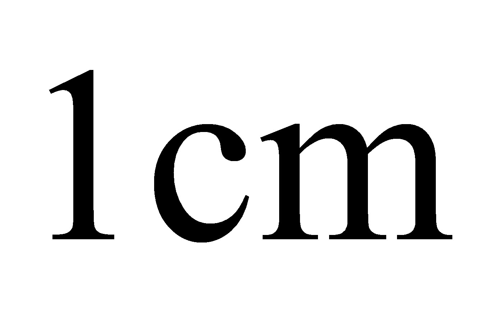
匀速向右运动，经过多少秒使？【变式3】（23-24七年级上·甘肃兰州·期末）如图，已知数轴上点 表示的数为6，
表示的数为6， 是数轴上在左侧的一点，且，两点间的距离为
是数轴上在左侧的一点，且，两点间的距离为 ．动点
．动点 从点出发，以每秒6个单位长度的速度沿数轴向左匀速运动，设运动时间为
从点出发，以每秒6个单位长度的速度沿数轴向左匀速运动，设运动时间为 秒．
秒．
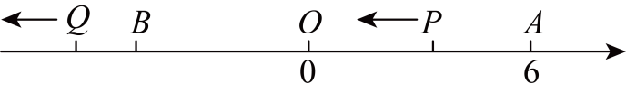
(1)数轴上点表示的数是_______，点表示的数是_______ 用含
用含 的代数式表示
的代数式表示 ；
；
(2)动点 从点出发，以每秒
从点出发，以每秒 个单位长度的速度沿数轴向左匀速运动，若点、同时出发．求：当点运动多少秒时，点与点相遇？
个单位长度的速度沿数轴向左匀速运动，若点、同时出发．求：当点运动多少秒时，点与点相遇？

一、单选题
1．（23-24七年级上·贵州黔东南·期中）下列四个选项中，所画数轴正确的是（ ）
A．
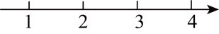
B．
C． D．
D．
2．（23-24七年级上·浙江宁波·期末）如图，数轴上被墨水遮盖的数可能是（ ）

A．
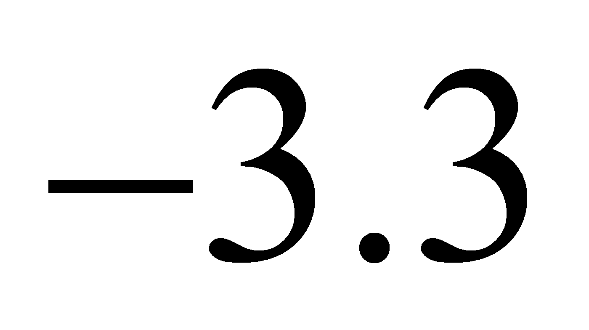
B．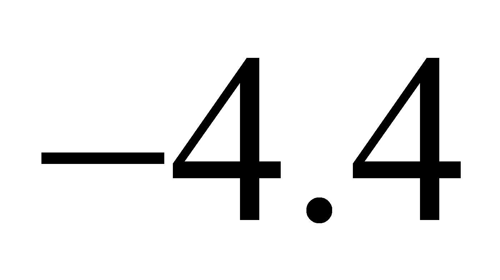
C． D．
D．
3．（2024·四川广元·中考真题）将在数轴上对应的点向右平移2个单位，则此时该点对应的数是（ ）
A． B．1 C． D．3
D．3
4．（2024·河北唐山·一模）如图，点 ，
， 对应的数分别为
对应的数分别为 ，
， ，对于结论：①
，对于结论：① ；②
；② ；③
；③ ．下列说法正确的是（ ）
．下列说法正确的是（ ）

A．仅①②对 B．仅①③对 C．仅②对 D．①②③都对
5．（23-24七年级上·内蒙古鄂尔多斯·期末）如图，一条数轴上有点A、B、C，其中点A、B表示的数分别是 ，10，现以点C为折点，将数轴向右对折，若点A落在射线上且到点B的距离为6，则C点表示的数是（ ）
，10，现以点C为折点，将数轴向右对折，若点A落在射线上且到点B的距离为6，则C点表示的数是（ ）
A．1 B． C．1或
C．1或 D．1或
D．1或
二、填空题
6．（23-24七年级上·湖南长沙·期中）点
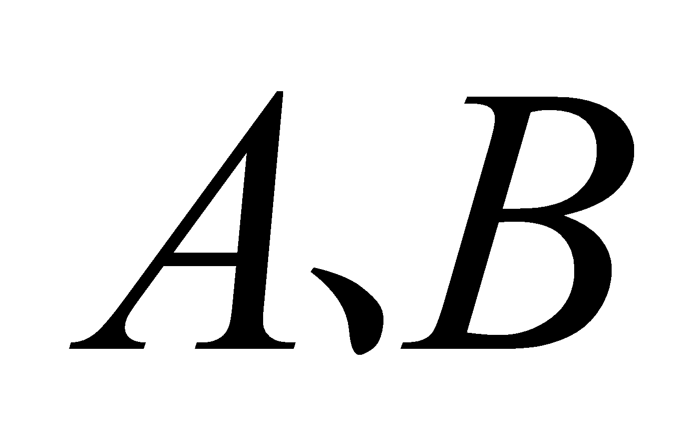
在数轴上对应的数分别为 和10，则两点间的距离为
和10，则两点间的距离为 7．（23-24七年级上·广东广州·期中）如图，分别写出数轴上点A、B、C、D表示的数：
A： B： C： D： ．

8．（23-24七年级上·山东滨州·期末）已知有理数 在数轴上的位置如图所示，则
在数轴上的位置如图所示，则
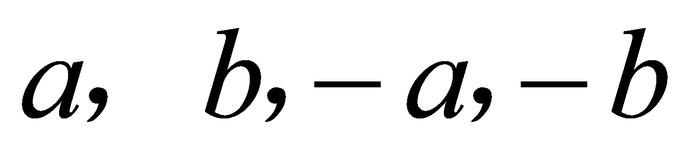
从大到小的顺序为 ．
9．（23-24六年级上·北京石景山·期中）已知点P在数轴上，如果将点P向左移动3个单位长度，再向右移动6个单位长度，终点表示的数是，那么点P所表示的数是 ．
10．（23-24七年级上·陕西榆林·期中）如图，已知直径为1个单位长度的圆形纸片上的点与数轴上表示的点重合，若将该圆形纸片沿数轴滚动一周（无滑动）后点与数轴上的点重合，则点表示的数为 .（ 取3.14）
取3.14）
三、解答题
11．（23-24七年级上·湖南衡阳·期中）已知下列各有理数： ，0，
，0， ，
， ．
．
(1)画出数轴，在数轴上标出这些数表示的点；
(2)用“<”号把这些数连接起来．
12．（23-24七年级上·云南临沧·期末）一只蚂蚁从原点 出发，它先向右爬了2个单位长度到达点，再向右爬了3个单位长度到达点，然后向左爬了9个单位长度到达点．
出发，它先向右爬了2个单位长度到达点，再向右爬了3个单位长度到达点，然后向左爬了9个单位长度到达点．
(1)画数轴表示点 所在的位置，并写出三点表示的数；
所在的位置，并写出三点表示的数；
(2)根据点在数轴上的位置回答：蚂蚁实际上是从原点出发，向什么方向爬行了几个单位长度？
13．（23-24七年级上·湖南娄底·阶段练习）如图，有理数a，b，c在数轴上，且 ．
．
(1)判断正负（用“<”或“>”填空）： ______0；
______0； ______0；
______0； ______0．
______0．
(2)化简：
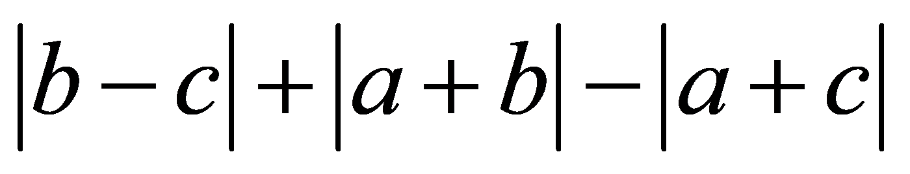
．14．（23-24七年级上·河南安阳·阶段练习）操作探究：已知在纸面上有一数轴（如图所示），
操作一：
(1)折叠纸面，使表示的1点与 表示的点重合，则表示的点与表示 的点重合；
表示的点重合，则表示的点与表示 的点重合；
操作二：
(2)折叠纸面，使表示的点与表示3的点重合，回答以下问题：
①表示5的点与表示 的点重合；
②若数轴上A、B两点之间距离为12，（A在B的左侧），且A、B两点经折叠后重合，求A、B两点表示的数是多少．
15．（23-24七年级上·辽宁葫芦岛·期中）根据给出的数轴及已知条件，解答下面的问题：
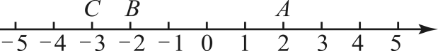
(1)已知点 在数轴位置如图所示，则到点的距离为4的点表示的数是______．
在数轴位置如图所示，则到点的距离为4的点表示的数是______．
(2)若将数轴折叠，使得点与点重合，则与点重合的点表示的数是______．若此数轴上 两点之间的距离为2023（
两点之间的距离为2023（ 在
在 的左侧）．且当点与点重合时，点与点也恰好重合，则点表示的数是______，点表示的数是______．
的左侧）．且当点与点重合时，点与点也恰好重合，则点表示的数是______，点表示的数是______．
(3) 在数轴上，到三点距离之和为12，求点对应数轴上的有理数．
在数轴上，到三点距离之和为12，求点对应数轴上的有理数．
16．（23-24七年级上·河南平顶山·期末）综合与探究
数轴可以将数与形完美结合．请借助数轴，结合具体情境解答下列问题：

(1)平移运动
一机器人从原点O开始，第1次向左跳1个单位，紧接着第2次向右跳2个单位，第3次向左跳3个单位，第4次向右跳4个单位，…，依此规律跳，当它跳完5次时，落在数轴上的点表示的数是 ；当它跳完2024次时，落在数轴上的点表示的数是 ．
(2)翻折变换
①若折叠数轴所在纸条，表示的点与表示3的点重合，则表示5的点与表示 的点重合．
②若数轴上D、E两点经折叠后重合，两点之间的距离为2024（D在E的左侧，且折痕与①折痕相同），则D点表示 ，E点表示 ．
③一条数轴上有点M、N、P，其中点M、N表示的数分别是 、8，现以点P为折点，将数轴向右对折，若点M对应的点落在点N的右边，并且线段的长度为3，请直接写出点P表示的数 ．
、8，现以点P为折点，将数轴向右对折，若点M对应的点落在点N的右边，并且线段的长度为3，请直接写出点P表示的数 ．